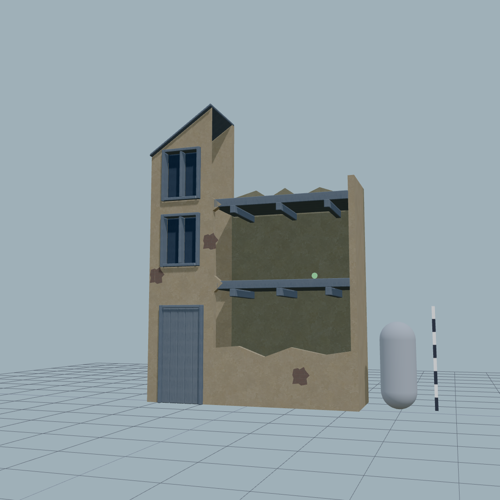
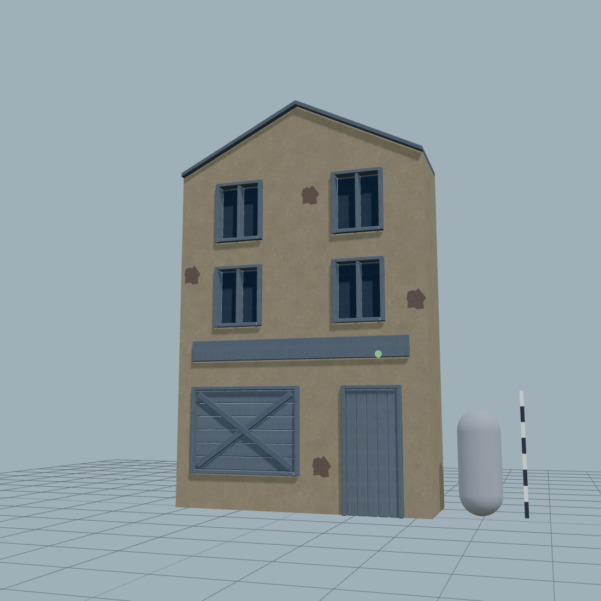
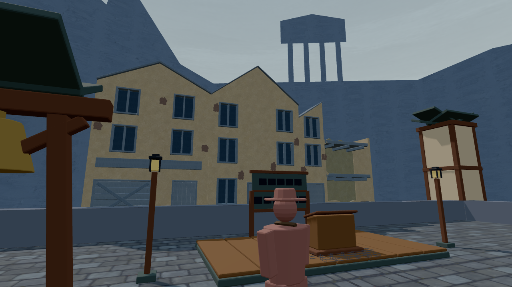
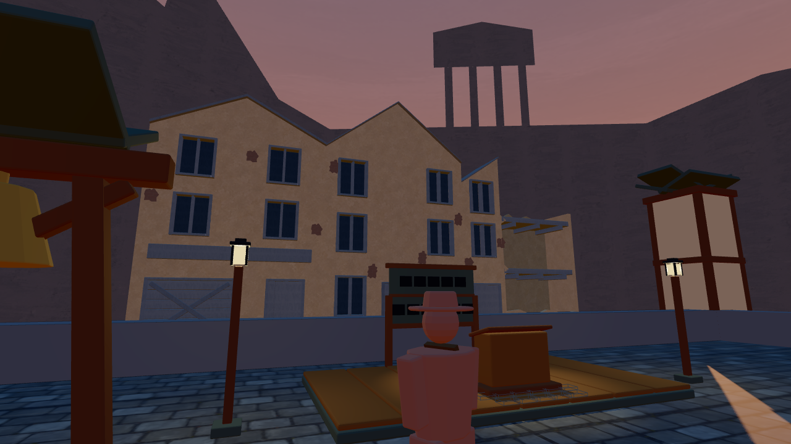
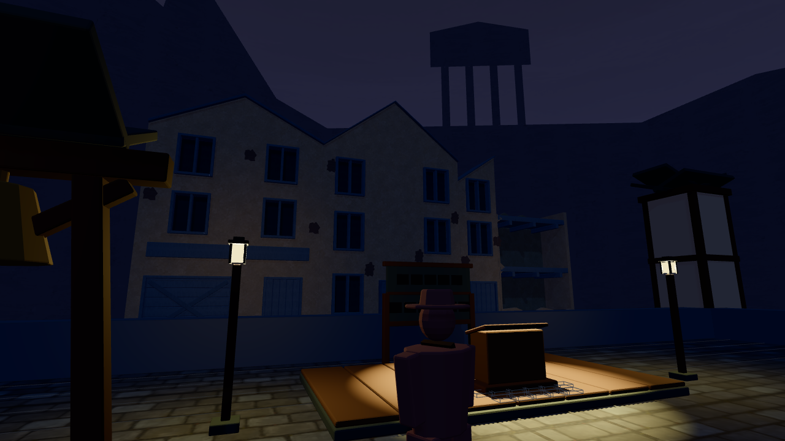

ART / RUBBLE SQUARE · PHASE 2 · HISTORICAL FACADE CHECKPOINT
Two more town facades
The half-collapsed building and boarded shop now join the approved ochre module on the same seven-bay grid. A is approved; B/C measurements are owner-approved and Codex accepted their visuals. Open the completed phase-2 review. Evidence and open gaps · Warm budget ledger · Live square
B · Half-collapsed
Five details, measurements and limitations · Live asset lab
 Generated hero · eye height
Generated hero · eye height
Actual model · game-height browser cameraReference wear is richer, brick mortar clearer and roof edges less austere. Production uses the approved A atlas unchanged. These differences remain visible.
 front
front three-quarter
three-quarter side
side game-camera
game-camera silhouette
silhouette collider-overlay
collider-overlayC · Boarded shop
Five details, measurements and limitations · Live asset lab
 Generated hero · eye height
Generated hero · eye height
Actual model · game-height browser cameraReference wear is richer, brick mortar clearer and roof edges less austere. Production uses the approved A atlas unchanged. These differences remain visible.
 front
front three-quarter
three-quarter side
side game-camera
game-camera silhouette
silhouette collider-overlay
collider-overlayThe complete row
Final A3/B2/C2 placements. These captures include existing furniture, citizens and corner walls, which remain future work.

day · actual eye-height square
dusk · actual eye-height square
trial · actual eye-height squareMeasured full scene
scripts/capture-rubble-baseline.mjs with the unchanged rubble-pixels classifier. Seed 1000 / 7 players. Pair swaps are separately recorded, with zero trial scene delta for B and C at all three instants.
| State | Warm HUD / scene | Calls | Triangles |
|---|
| day | 5.842% / 5.243% | 380 | 70,140 |
| dusk | 18.417% / 19.453% | 380 | 70,140 |
| trial | 9.695% / 9.039% | 388 | 73,428 |
The four mood frames
 day-queue-notice-board
day-queue-notice-board square-dusk-rubble
square-dusk-rubble night-tribunal-searchlight
night-tribunal-searchlight citizens-lineup-1946
citizens-lineup-1946Still open
Distance review of thin roof caps and brick patches; furniture and static citizens; dusk/trial lighting; the final pasted-on and silhouette reviews. The trial ground’s low tail is still nearly black to the eye. Green tests do not establish visual acceptance. The complete phase-2 evidence is linked above.